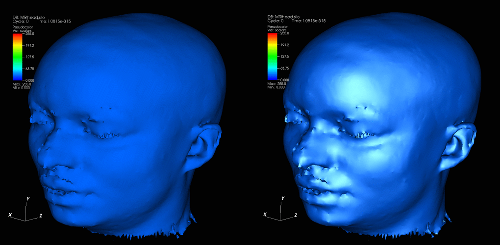

|  |
| Figure 29 |
Once specular lighting is enabled, you can change the strength and sharpness properties of the material reflecting the light. The strength, which you can set using the Strength slider, influences how glossy the plots are and how much light is reflected off of the plots. The sharpness, which is set using the Sharpness slider, controls the locality of the reflections. Higher the sharpness values result in smaller specular highlights. Specular highlights are a crucial component of lighting models and including specular lighting in your visualizations enhances their appearance by making them more realistic. Compare and contrast the plots in figure. The plot on the left side has no specular highlights and the plot on the right side has specular highlights.